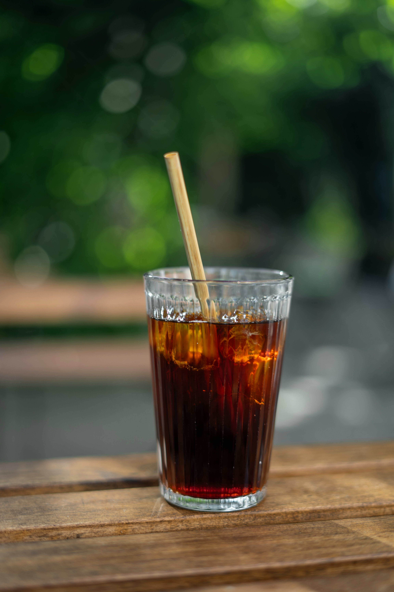
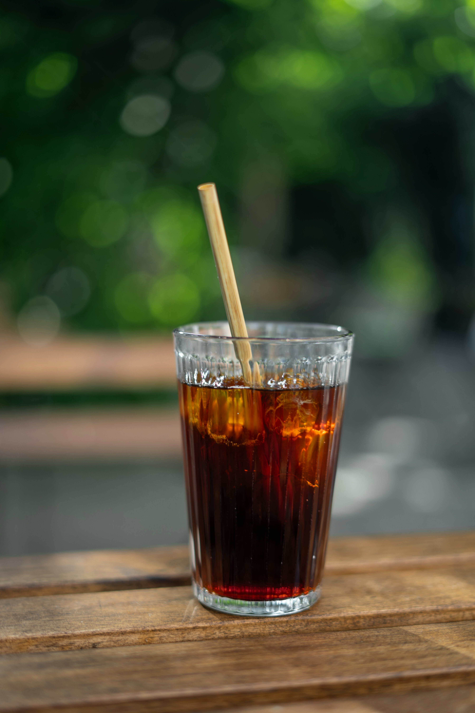

About ☕️
Mr Beans
Mr Beans
Espresso Shot
Cold Brew
Explore
Our Coffee
Our Coffee
Welcome to BeanBliss, where coffee isn't just a beverage; it's a passion, a craft, and a way of life.
From bean to cup, we're dedicated to delivering excellence in every sip. Join us on a journey of flavor and quality,
crafted with love for the ultimate coffee experience.
Delve into the heart of our coffee philosophy with our exceptional selection of specialty beans from around the world.
A bold and intense base, perfect for those who enjoy the pure essence of coffee. Experience it as
a straight shot,
or diluted into an Americano.

Mr Beans
Cafe
Cafe
DISCOVER THE PERFECT BLEND OF COFFEE AND
COMMUNITY AT BEAN BLISS CAFÉ.
Delve into the heart of our coffee philosophy with our exceptional selection of specialty beans from around the world.